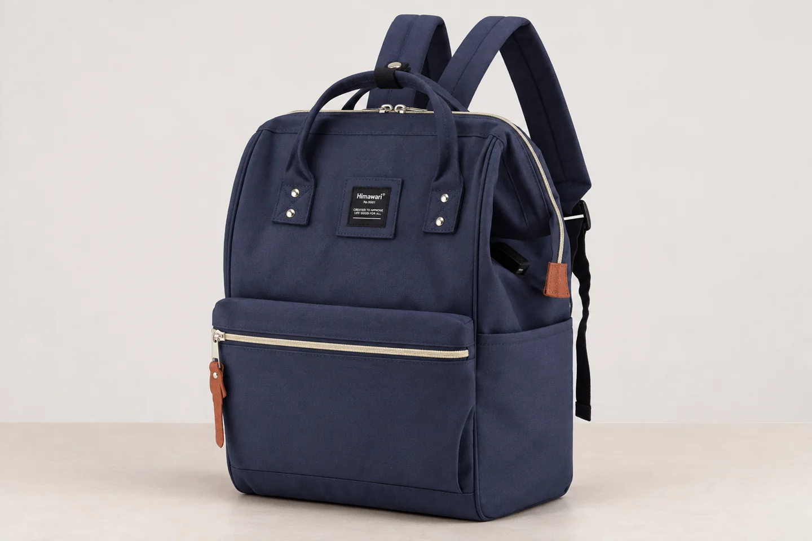
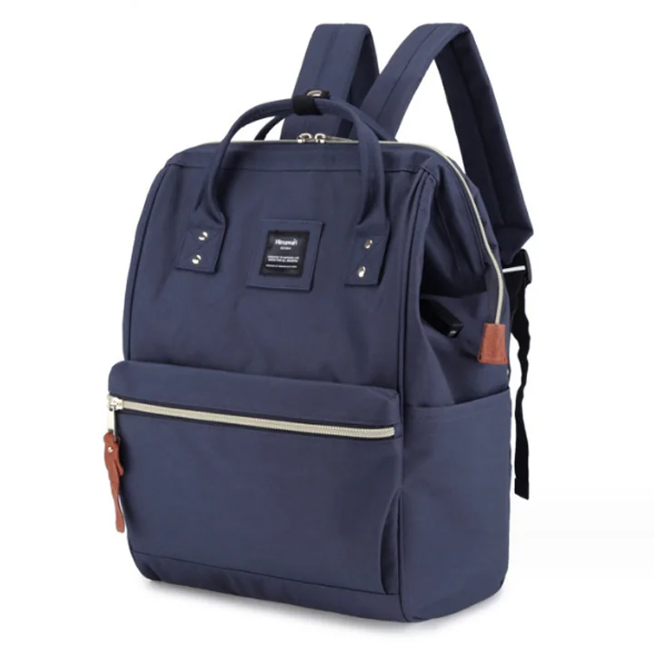

백팩 옆주머니 입구가 사진에 가려졌다면 무엇을 물어볼까
상품 사진에서 백팩의 옆주머니는 몸판보다 작게 보입니다. 정면 사진에서는 선만 보이고 사선 사진에서는 입구가 그림자에 가려지기도 합니다. 자주 쓰는 물건을 곁에 두고 싶은 사람에게는 그 작은 입구의 모양이 가방 선택을 바꿀 수 있습니다. 다만 사진만으로 물병이나 우산이 들어간다고 결론 내리기보다, 보이는 부분과 직접 확인해야 할 치수를 나누어야 합니다.
No.9001 네이비의 제품 사진에는 앞면의 밝은 지퍼와 함께 옆면 주머니의 윗선이 보입니다. 이 가방의 안내 외부 크기는 가로 28cm, 세로 40cm, 폭 17cm입니다. 세 수치는 가방 전체를 비교할 때 참고할 값이며 옆주머니의 입구 너비나 깊이를 뜻하지 않습니다. 주머니에 담길 물건은 별도의 실측이나 실제 사용 확인이 필요합니다.
정면 사진에서 선을 찾고, 사선 사진에서 깊이를 묻는다
정면에서는 몸판과 앞포켓의 경계가 먼저 보입니다. 옆주머니가 몸판과 같은 색이라면 윗선이 가로로 이어져도 한 장의 천처럼 보일 수 있습니다. No.9001의 실제 사진에서는 옆면의 윗선이 앞포켓 지퍼와 다른 높이에 있습니다. 두 선이 가까이 보인다고 같은 주머니의 입구라고 단정하지 말고, 선이 시작하고 끝나는 면을 살펴봅니다.
사선 사진은 옆면의 위치를 보여 주지만 촬영 각도 때문에 주머니의 폭이나 깊이가 정확히 드러나지는 않습니다. 가방이 기울거나 원단에 주름이 생겨도 입구 모양은 달라 보일 수 있습니다. 사진에서 확인할 수 있는 것은 주머니가 어느 면에 있고 윗선이 대략 어디에 있는지까지입니다. 손을 넣을 수 있는 폭이나 물건을 받치는 깊이는 수치로 따로 물어봅니다.

‘들어갈까요’보다 물건의 모양을 먼저 적는다
물병을 넣고 싶을 때 용량만 보내면 답하기 어렵습니다. 같은 용량이라도 통통한 병과 길쭉한 병이 있고 뚜껑이나 손잡이가 몸통보다 넓을 수 있습니다. 평소 쓰는 병을 닫은 상태로 바닥부터 가장 높은 곳까지 재고, 가장 넓은 부분의 둘레나 지름도 함께 적습니다. 우산이나 안경집처럼 병이 아닌 물건도 튀어나온 끈과 단단한 모서리를 포함해 봅니다.
판매자에게 주머니 입구의 실제 너비와 바닥까지의 깊이를 요청합니다. 입구를 평평하게 놓고 잰 길이인지, 어느 부분을 기준으로 잰 것인지 함께 물으면 숫자를 해석하기 쉽습니다. 원단을 어느 정도 벌려 잴 수 있는지는 구조에 따라 다르므로, 평면 너비를 병 지름과 같은 값으로 단순 비교하지 않습니다. 가능하다면 해당 물건과 비슷한 크기의 모형을 넣은 사진도 요청할 수 있습니다.
받은 치수에도 측정 위치와 방법에 따른 차이가 있을 수 있습니다. 물건이 입구를 통과하는지와 주머니 안에서 얼마나 안정적으로 놓이는지는 별개의 문제입니다. 가방의 외부 높이가 40cm라고 해서 옆주머니도 그만큼 깊다고 생각하면 안 됩니다. 상품 안내에 주머니 치수가 없다면 미기재 상태로 두고, 확인하지 못한 채 특정 물건의 수납을 보장하지 않습니다.
빈 가방과 짐을 담은 가방의 차이
가능하다면 빈 가방을 먼저 세워 주머니 입구를 살피고, 평소처럼 몸판을 채운 뒤 같은 위치를 다시 봅니다. 몸판에 든 물건이 옆면을 밀거나 가방의 자세가 달라지면 손이 들어가는 각도도 달라질 수 있습니다. 이것은 어떤 제품에서도 반드시 생긴다는 뜻이 아니라, 실제 조합을 비교할 때 확인할 조건입니다. 지퍼를 억지로 닫거나 주머니를 과하게 벌려 시험하지 않습니다.
물건을 넣을 수 있다면 바닥이 받쳐지는 위치와 윗부분이 밖으로 나오는 정도를 봅니다. 가방을 손에 들어 옮길 때와 어깨에 멨을 때, 의자 옆에 내려놓을 때 물건이 걸리는 자리도 달라집니다. 비어 있는 주머니의 사진 한 장으로는 이 움직임을 확인하기 어렵습니다. 마실 물처럼 뚜껑이 있는 물건은 잠긴 상태로 확인하고, 젖은 물건은 다른 짐과 닿는 면을 따로 생각합니다.
확인할 수 없는 정보는 질문으로 남긴다
온라인 문의에는 ‘No.9001 네이비 옆주머니’처럼 모델과 색상을 적고, 입구가 보이는 사진을 지정합니다. 이어서 ‘평평하게 놓았을 때 입구 너비와 안쪽 바닥까지 깊이를 알려 주세요’라고 묻습니다. 특정 물건을 사용할 계획이면 닫힌 상태의 높이와 가장 넓은 부분을 함께 적고, 실제로 넣었을 때 어느 정도 나오는지도 확인합니다.
문의 답변을 기다리는 동안에는 이미 쓰는 물건의 치수부터 기록할 수 있습니다. 병이나 접은 우산을 줄자로 잴 때는 손으로 잡는 고리와 뚜껑이 가장 넓은 부분보다 더 튀어나오는지도 확인합니다. 내용물을 넣은 상태의 무게까지 단순한 높이 숫자로 바꿀 수는 없으므로, 무거운 물건을 둘 계획이라면 해당 제품의 사용 안내를 별도로 확인합니다.
구매 후 실제로 확인할 기회가 생겼다면 처음에는 물건을 잡은 채 천천히 넣고 꺼내 봅니다. 입구에서 저항이 느껴지면 크기가 맞는 것처럼 보이더라도 힘으로 밀어 넣지 않습니다. 주머니의 모서리나 윗선이 지속해서 당겨지는지 살피고, 맞지 않으면 가방의 다른 공간이나 별도의 휴대 방법을 고려합니다.

답이 도착하면 외부 치수와 주머니 치수를 별도로 기록합니다. 판매자가 직접 측정한 값인지, 상세 페이지에 적힌 값인지도 남기면 다른 모델과 비교할 때 기준이 섞이지 않습니다. 답이 모호하면 ‘17cm 폭’이 몸판 전체의 앞뒤 폭인지 주머니 입구인지 다시 확인합니다. 숫자가 같아 보이더라도 가리키는 방향은 다를 수 있습니다.
옆주머니를 고르는 기준은 크기 하나로 끝나지 않습니다. 어떤 물건을 넣을지, 얼마나 자주 꺼낼지, 몸판에 짐이 들어간 상태에서 손이 닿는지를 함께 봅니다. 정면과 사선 사진에서 구조를 찾고 확인되지 않은 치수는 직접 물으면, 작은 주머니를 기대에 맞게 쓸 수 있을지 더 분명하게 판단할 수 있습니다.